Katana Shoujo
Last edited 28 Sep. 2014
Info
Katana Shoujo was a roughly 72 hour game jam project that parodies the visual novel Katawa Shoujo. I'd say something about what the game's about, but... to be honest I'm not really sure what it's about. All I know is that it has something to do with our male lead Hisao and his experiences with girls "with" katanas.
- Made by: Max Chung, Alex Lewis, Derek Malonzo, Victor Stolle, Dehowe Feng, Vince Chen, Anni Huang, and Tiffany Lu
- Play our "finished" game online: Katana Shoujo
- Repository: katana-shoujo
Background
The idea of Katana Shoujo sprouted up roughly half a year ago, during winter break between 2013 and 2014. Then, sometime in December, a group of local friends and I got together to work on Kidnapper. Things were looking really bad on that project. Out of the four members still sticking around through the night, two, Derek and Victor, ended up playing visual novels together instead of working on the project.
To those unfamiliar, a visual novel, as its name suggests, is like an interactive storybook. Playing a visual novel is very much akin to reading through a picture book, but different than the traditional literature medium, visual novels offer some interactive elements to the player. Players can choose to respond to certain situations with a particular set of choices, and these decisions can in turn drastically change the future span of the story.
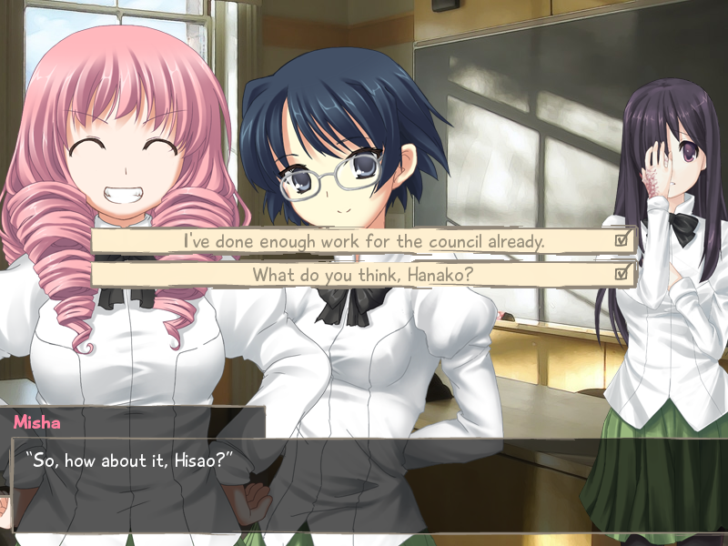An example screenshot from Katawa Shoujo of a visual novel
Visual novels are popular in Japan, and through some translation work, have become more readily available to foreign audiences. Derek and Victor, opting out of work, decided to pass the time by playing visual novel(s), which I want to say was School Days and/or Katawa. Derek, an artist, ran out of art to do since art was pretty much already complete by that stage. And Victor, a programmer, well, let's just say he did more harm than good attempting to program, so we kind of forced him off of programming, and his attempts to help pseudocode weren't exactly helpful either. In an act of understandable choice, the two passed the time doing other things.
The full details of that project are saved for another day. What was important to Katana then was that sometime around midnight we decided to take a short break to refresh ourselves. The four of us went out for a night walk to 7-Eleven. Along the way the conversation shifted to visual novels, and we thought about possibly doing a visual novel for a game jam in the future. We started talking about the weirder and the odder bunch of visual novels out there, including those that dealt with pigeons and sushi.
Naturally, Katawa Shoujo was brought up among us. For those that don't know, Katawa Shoujo translates pretty closely to Crippled Girls or Disabled Girls. The visual novel revolves around the male lead Hisao and his romantic interactions with (mostly) disabled girls. I don't know the full historical details behind its making, but from my understanding, the first originations of Katawa came from 2ch, which was then brought to 4chan and widely discussed there. Eventually, a group from 4chan decided to start work on making Katawa into a visual novel, and after years in development, Katawa Shoujo Act One was released in early 2012.
Although the premise of Katawa seems pretty ridiculous and comedic at first, from what I heard then, the game was anything but that, a fact both Derek and Victor reaffirmed having played the game before. The game was much more serious and sincere in its storytelling than what meets the surface. As we walked and talked about the subject, an idea then hit me. Katawa Shoujo... Katawa... Katawa, what if instead of Katawa, it was Katana? Yes, Katana, Katana Shoujo. It was what I believed to be a momentary stroke of genius.
The reaction from the rest was inviting. We quickly talked about the idea further. A visual novel about girls with katanas stuck through them, or something along those lines. We decided that we would make Katana Shoujo in our next game jam, and we'd reconvene during summer break. It seems among this group of friends, the more offensive and non-sensical the idea, the more we joke about it and find it interesting. Ahem, case in point, Kidnapper. Along this train of thought, we picked up Katana in good earnest.
Fast forward a couple of months, we were still set on making Katana come summer break. I mentioned Katana to some of my VGDC friends who happened to be talking about Katawa during the school year. They thought Katana was a pretty funny and dumb idea and wondered where we were going with it. For the sake of a game jam being a game jam, I told them I wouldn't think too much for the story now, leaving that to when the time comes. However, an idea hit me, and I photoshopped an image of Katawa to bring the Katana story across.
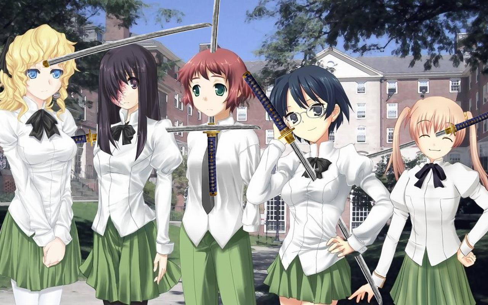Katana Shoujo, clearly among my finest creations
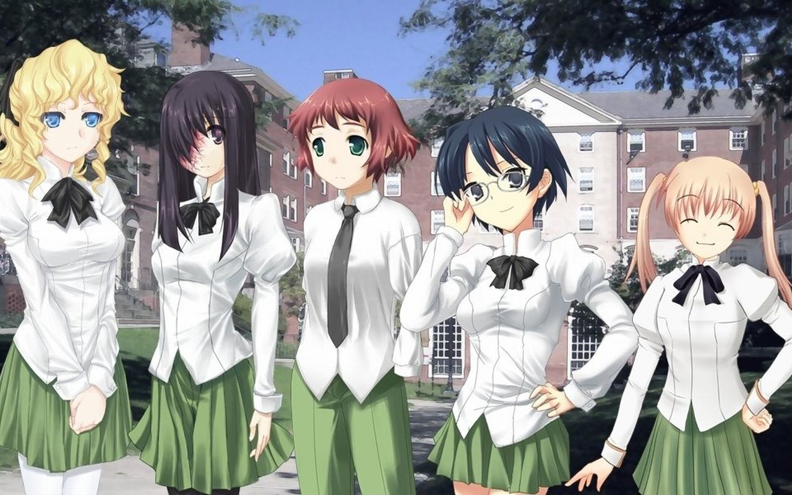Original
As just mentioned, I didn't want to prepare too much content-wise for Katana in the spirit of a game jam, but I did do some preparation administratively-wise. First, we'd continue to use Java, but just native Java. It was a familiar language too most us and what we used for Kidnapper. I also wanted to try and rectify our previous mistake of using the complicated libgdx that caused more harm than good when we tried to learn the library.
This time we'd just use Java by its standalone self. Alex, our lead programmer, was familiar with it, and the other less experienced programmers should have had some experience using it in the past. If anyone needed help, I had the source code to Verves of Steel, a Java game jam project I was part of in Spring. I gave a copy of it out to anyone on my team who wanted it for reference, and I used it as a bare skeleton to this game.
I extended the time of the game jam over the course of three days instead the one of last time, giving us much more time to work out kinks in the game. We were extremely pressed for time for Kidnapper, so this should definitely help. Finally, having some minor interactions in the past with some members on Project Seattle, a VGDC visual novel project, I assumed that Katana would probably not be very programmer intensive, and our focus would be more on story writers and artists.
So I made it an effort this time around to get some more artists, though of course keep (mostly) anyone from the last game jam around if they were interested. I would probably be on art duty the entire time. Derek was already on board. I got in talks with Tiffany, a high school friend, through Facebook, and she seemed pretty interested in helping out on digital art. Tiffany wasn't that experienced with digital art, but by the time summer rolled around, I hope she would be ready to work. Through some talks with Derek, we were able to hand off Derek's old drawing tablet to her and have her start getting used to it until we would meet for summer.
I also somehow by magic got in contact with Anni, another high school friend, through a random Facebook message, and she seemed up for helping out on art. Anni's done plenty of digital art in the past, so I wasn't too worried about having to teach her anything. The most I had to teach her and everyone else was using Git, which I strongly hoped everyone would use for the project. If things got too complicated for the artists though, we could just use a Drive/Dropbox/flash drive to transfer files.
I wasn't particularly sure how much manpower we'd need for the story. My original vision of how the game jam would play out was that we would all pretty quickly finish the programming side of things, and as the story seemed pretty comedic and dumb anyways, we'd just all contribute a bunch of snippets of story together to form a weird parody story. I did tell Derek, however, who seemed pretty interested in writing, that if things did not pan out like that, we would probably need him to work divide his time on story.
The only other member to really talk about was Dehowe, who I randomly started talking about anime with during summer. He told me he recently transferred to Computer Science, so I asked if he wanted to come help out. By chance, he was going to be available during the latter half of summer like me, and he was free to do Katana. So now our team was assembled, with Alex, Victor, Dehowe, and Vince on programming; Derek, Anni, Tiffany, and me on art; Derek possibly on story writing.
I did actually (try and) assign some homework to my team before we met. For the sake of parody, I strongly recommended everyone play through a Katawa Shoujo route before meeting up. Unfortunately, I'm pretty sure I'm the only one out of the entire group to do so. I wouldn't call it their laziness, but I'm a little hurt at the general apathy everyone else had in preparing and getting ready for the game jam.
I've gotten used to these situations though. As I've learned and experienced, this isn't anything new. I shouldn't expect anyone to put in special effort into a project or do any special preparation. And plus, too often than not, I'm probably the source of my own problems, because others may not have the same investment and interest in projects I'm excited about. I can't expect everyone to put in the same amount of effort as me.
Anyways, I'll talk about my playthrough. My playthrough of Katawa was actually my first formal visual novel experience, so it was quite interesting. Some of the beginning parts felt very tedious, reading through screens upon screens of expository text, but as I got further and further into the story, I definitely felt more attached and touched by the storyline. There were some minor grammar details that ticked me off occasionally, but they didn't drag down the overall experience.
The arc I eventually landed on was the legless girl, Emi. I guess I was okay with that. I think originally I was planning on going on the Rin arc, but somehow I ended up with Emi. Whatever, I'm not going to question the choice system. It was a good arc that I enjoyed nonetheless, and I was satisfied overall. I was definitely surprised at how mature the story approached its disability themes, even though I expected this already beforehand. It was a great game and great preparation to Katana as well.
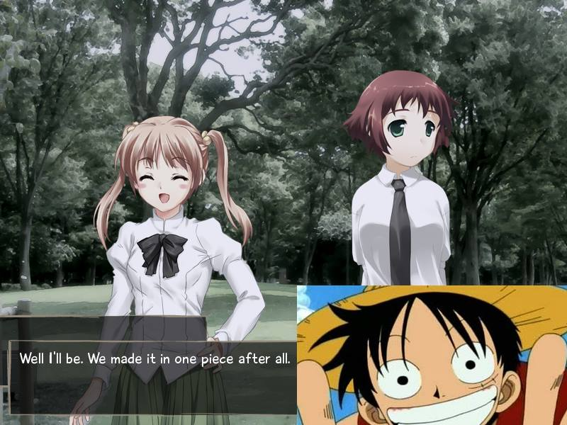Much fun and some Photoshops were had
Welp, let's fast forward and get to the actual game jam. Come the actual game jam, let's just say things didn't go exactly go according to plan. I'll talk about the art side of things first since that's what I worked on exclusively for most of the time. I imagined that the artwork would be pretty demanding, and I was right. If things went perfectly and people did as they were told, we would have probably been fine, but unfortunately some strange mishaps occurred that severely hindered us.
Since I knew Anni mostly as a character artist, I assigned her all the characters to draw. Each was to have particular expressions, but with a little bit skimping of details, it wouldn't be too difficult to draw different expressions without redrawing each character. I trust that she could handle it, and she affirmed that it wouldn't be too difficult. However, several major and odd things happened with Anni.
The first was that she ended up starting pretty late into the event, coming in sometime during the second day rather than starting with the good three or four of us that were there on the first. She apparently had problems getting a ride so she couldn't make it prior. She seemed to be making pretty good progress however, finishing an entire character with expressions in relatively good time when she got to my house. And yes, she actually finished a character. Everybody there saw it with their own eyes, I swear. And then... somehow we lost all contact with her. She returned home that day saying she'd get some more work done and would try and stay over longer the next day to make sure we'd get everything complete by our deadline.
The next day, she said she couldn't come again because of ride issues. We resolved to discussing things through Skype, but eventually our conversation there stopped. From then on, she was silent. In the end, we never got a single piece of artwork from her, even though we physically saw with our own eyes that she had done work for us. I'm not really sure what's going on, but, whatever, I'm not going to push the issue. If this was a long term project, sure, I'd be much more annoyed and assertive, but for game jams, especially with this somewhat flaky and not-quite-technically-competent group that I'm working with here, I'm expecting the worse. I'll just assume that she has own problems and circumstances to take care of, and that unfortunately, things didn't work out.

This is why all our characters and the Katana Shoujo icon are white squares
Given more time, I could have taken over her work, but unfortunately, I didn't have that luxury. When I first started working on backgrounds, I immediately knew it was going to a pretty complicated and lengthy process on my side. I really wanted to practice a bit on my perspective, so I worked 100% on line art. It was extremely time-consuming, and I had to do in total 6 different backgrounds to do. This is the first line art background I finished:
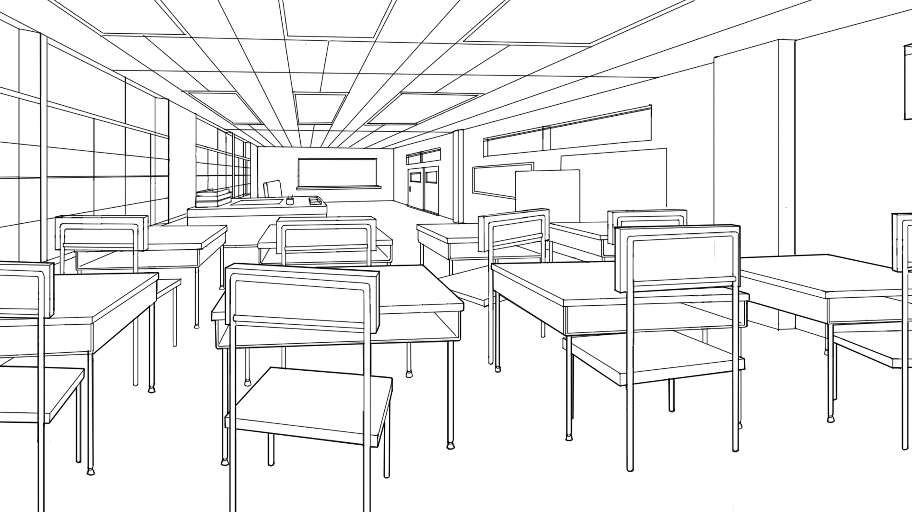Classroom lines
This background in particular was the most difficult because of so many chairs and desks I had to draw. The perspective is also pretty wonky since if you actually looked at it, there's a huge huge gap between the board and the teacher's desk and between the teacher's desk and the first student desks. Anni suggested that I pick up SketchUp seeing how time consuming this was. Even if I knew how to use it, I don't think I would have. I definitely feel it was valuable to sit down and try to attempt everything in 2D. For practical purposes, SketchUp would definitely be faster, but one of the things I wanted to get out of this game jam was to spend time practicing perspective and backgrounds.
I had a particular style of backgrounds I had in mind. First, 16:9 widescreen, of course, since that seems to be standard nowadays. More correctly, we have a forced 1280x720 screen to make calculating things a bit easier, albeit hardcoded. Unfortunately, one of the problems I had for the backgrounds that is clearly evident in the picture I drew above, is that I worked on too low resolution.
You can see how I couldn't differentiate between line quality too well, and everything altogether seems unnaturally thick. That was just the result of working on a small 2000 pixel wide canvas. By the time I realized my mistake, I was well into the line art. I didn't want to waste extra time to resize and redraw everything, so I had to keep on with this low resolution style for the rest of the drawings. Given more time, I would love to have restarted on a much larger canvas.
Another quick point I wanted to note is the vanishing point. All the drawings I've made have a vanishing point in the top-left rule of thirds corner. This is because I wanted to counter balance it with the character, which would take up the right thirds. I think after playing around with some different setups though, it actually looks best with both the characters and the background sharing the same vanishing point. We weren't able to make these changes though. The characters ended up as white squares that kind of just float in the middle of the screen, and the backgrounds were left as is.
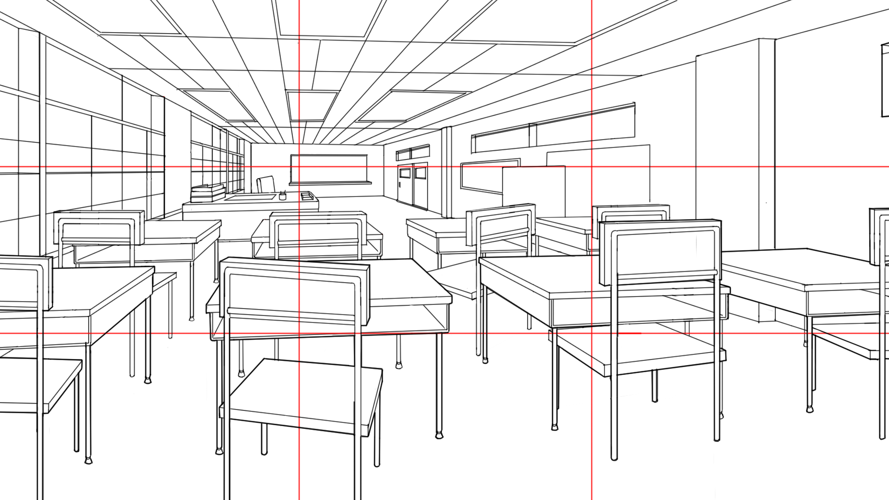Rule of thirds indicated on the classroom background
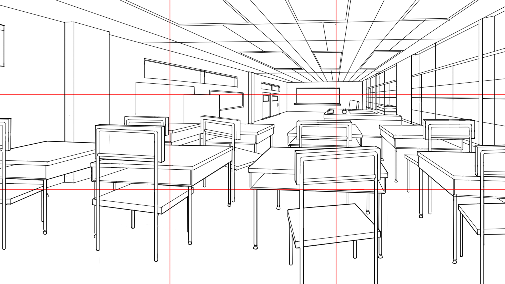Rule of thirds indicated on the flipped classroom background
For a variety of reasons, I ended up not coloring the line art. I finished all the lines about 2 to 2 and a half days into the project, and by then, I needed to shift myself over to programming duties because Alex wasn't going to be available the last day. Derek originally was going to be doing full time art, but he decided he really wanted to write an arc for the story, so he split his time to help me with some of the art work while focusing his time mainly on the story. He did most of the base coloring... and added touches... for our backgrounds.
Tiffany also arrived very late to the party and was only available for a good maybe five hours or so, but she did what she could when she came. She was still not very used to the drawing tablet and Photoshop, so she understandably had some difficulties due to her lack of experience. Unfortunately, knee deep in work, Derek and I weren't able to give her too many pointers since we had to focus on our own tasks. With a few tips and instructions, we got her started with some coloring tips. She did most of the shading on the pictures after Derek provided the base color. In the end, she left after doing most of the shading, and Derek finished up what remained. Here are all our "finished" backgrounds for the game in order of their creation.
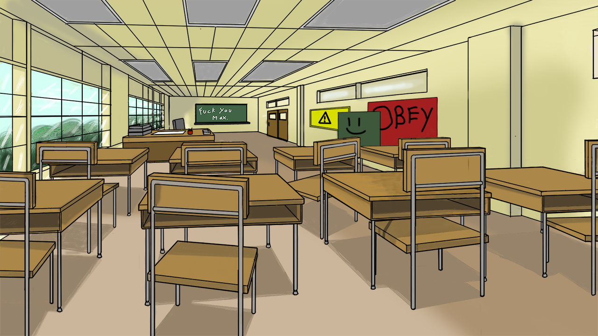Classroom
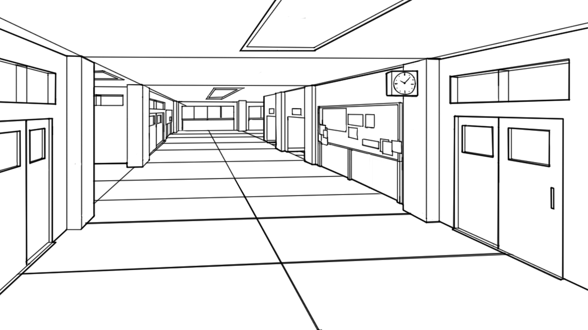 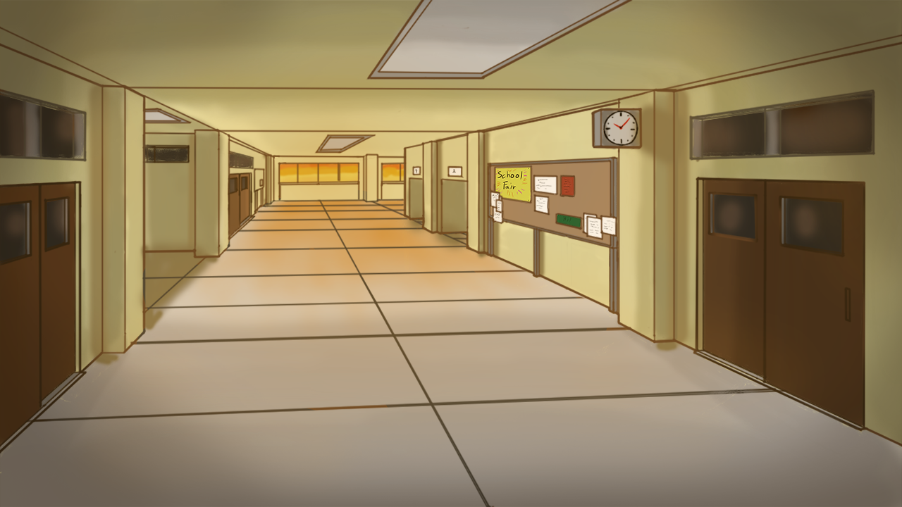School hallway
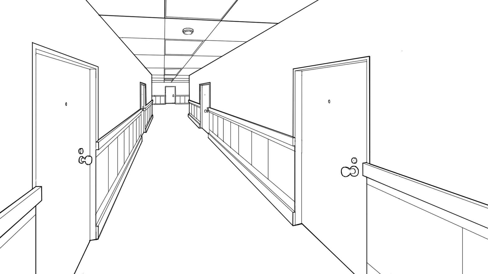 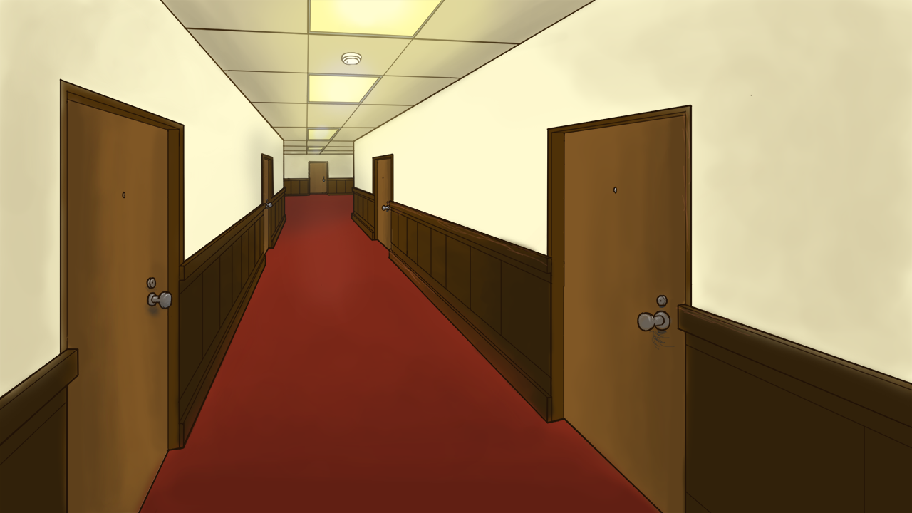Dorm hallway
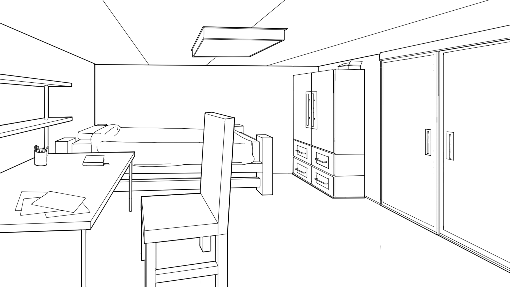 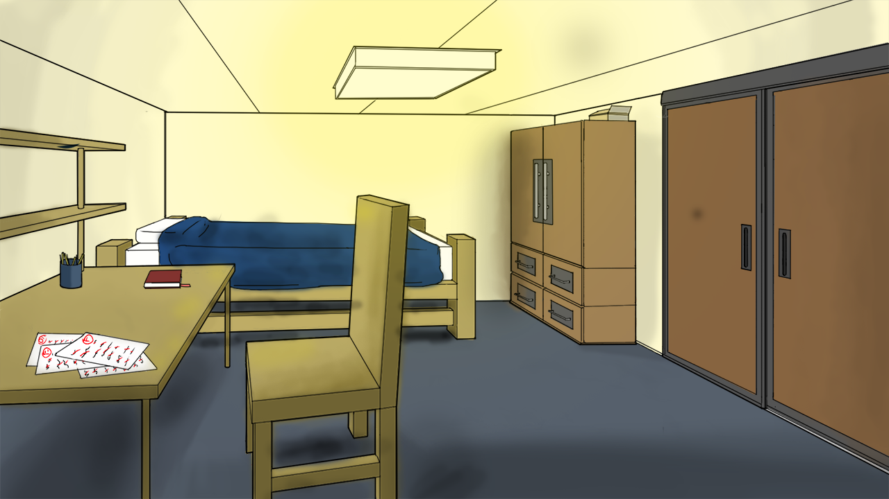Bedroom
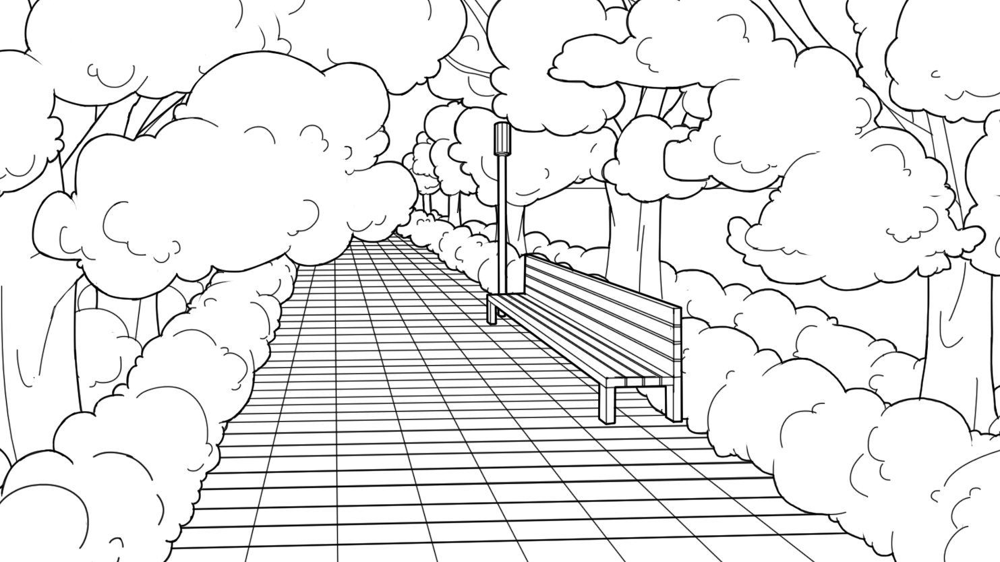 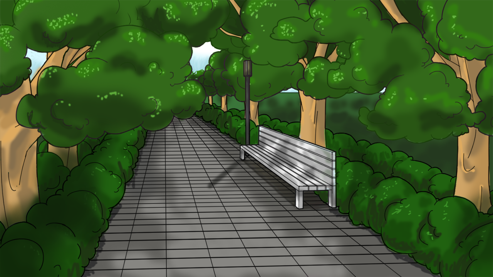Park
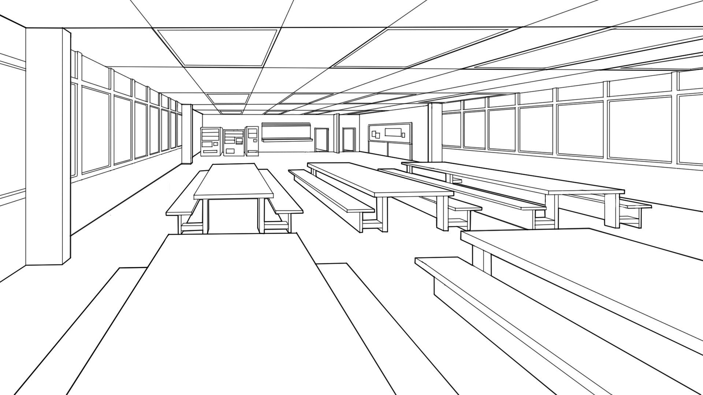 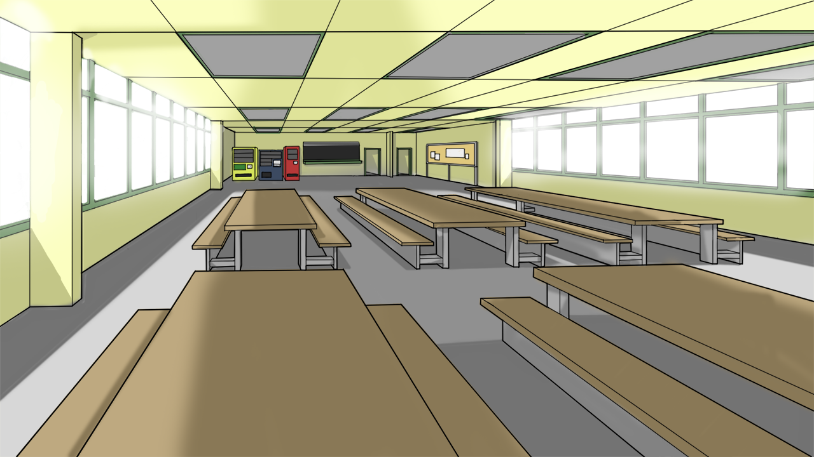Cafeteria
I'll spare the in-depth art critiques for each picture and just go over some general points. As I've mentioned briefly, there are some perspective problems on my end which makes things unnaturally wide or long. In particular, note how wide the doors are in the dorm hallway. I didn't have the luxury to fix them after committing too much time to what they are now. Things may also seem too static or blocky, due to the fact that everything is pretty much built out of boxes and rectangles. If I had the chance, a second draw-through would be nice to round out edges and shape the forms to have a little more detail to them.
I won't bash the coloring too much. Obviously, I don't think anyone would consider it top notch quality, considering the inexperience of our artists and the time pressure to do other tasks. It's important to keep in mind that none of us artists are professionals, and we for the most part only pursue digital art as an on and off hobby. I don't need to go far to point out light source, texturing, blending, and other issues that we have. Some of it is kind of funny to some extent, for instance the pole shadow in the park randomly sticking out on the ground or the triangle (pizza as we called it) lighting on the cafeteria tables.
Regardless of quality, I'm proud that at least for the backgrounds we got everything "complete." For three days of work, this is quite amazing, and while they may not be master pieces of perspective, coloring, and shading, the important takeaway is that at least they're relatively consistently finished. That's the main focus I tried to stress to everyone. We have to spend our time wisely and evenly among all the tasks before us because it's more important to look at the overall picture. Especially for a game jam such as this one, where all the members will soon go their separate ways and probably never look at continuing this project again, consistency trumps quality. Having a full makeshift game finished is better than having only a small section done.
Well, unfortunately, we weren't able to get a full game going. We got as far as the introduction to all the different routes. The different routes were completed, but we did not have time to put them into the game. Several reasons led to this, mainly on the programming and story sides, where things just got completed way too late, and without proper testing, would break the game when put into the game on the first try.
The programming side of things turned out to be much more complicated than expected. The main reason was because we basically only had one solid programmer for the entire duration of the event, Alex, and even he had to leave on the third day to attend family events. Vince was supposed to be on programming duty. He showed up for half a day on the second day but he wouldn't program, insisting as only going as far as to pseudocode. Laziness, apathy, or whatever, I'm not sure, but if that's his choice, then that's his choice. I can't force people to bunker down and do work.
Dehowe was a bit of an oddity. He had to leave and come back to the event pretty frequently because he had to help out his family. He also had no prior Java experience. I believe he only knew a bit of C++, maybe C and Python from his courses at college. I gave him the Verves of Steel code as reference and tasked him with getting sounds into the game. The farthest he got was making the sounds, off BFXR, but he was never able to get the sounds into the game even after reading through the audio code of Verves.
The sounds do indeed exist
Victor stayed for basically the entire event, though his duties varied. He attempted to program in the beginning of the event. I tasked him with setting up a basic framework for our game, i.e. setting up a basic window and drawing things properly on screen so we had something to build off of. I gave him all the Verves of Steel source code, and I told him he could use literally copy it all if it came down to it to get something working on screen. But he got nothing done. Or more properly, I should say he got nothing coded that worked. Eventually, because of the demands of the story, Victor switched jobs to writing.
I don't know if it's a matter of the Verves code being messy because of its birth from a game jam or just inexperience with Java from the programmers, but I do find it somewhat ridiculous how both Dehowe and Victor were able to get zero, nilch code into the game after hours worth of "coding." It's not as if there wasn't effort put in. Both spent a good chunk of time here programming in front of me. It's not as if these guys haven't programmed before. I just don't get it. I've given you plenty of reference code, and if I get nothing in return, there's absolutely nothing I can do when I'm so far swamped in my own tasks.
I want to pause momentarily here to write a small disclaimer of sorts. If I do come across as basically trash talking and bashing my team members, I apologize for that. I view game jams as a stricter work environment than a friendly, casual one. Before we're here to play around and socialize, you've come here with a job I expect you to try and do. When I get nothing back, of course, I'm upset.
But, as I've learned through the years, there's nothing I can do about it. This isn't a mentorship-mentee program. If you can't help yourself, I can't help you. I'm busy having to do my own tasks and cover for you if it comes to it. People call game jams a great learning experience, and they are, but they aren't something you just show up to and expect to be spoon fed experience and knowledge. Game jams are places where you can put the knowledge that you've learned between game jams into practice and use. It's an opportunity to build your people relationships and train your work ethic in a pressured environment. It isn't a place for you to learn art or coding or design the day of. If you have no knowledge whatsoever of what you're doing, you shouldn't attend a game jam, because, quite frankly, all you're doing is dragging people down.
But I'll reel myself back in a bit. Maybe I'm just a masochist or something, but I've learned to cope with development failures well over the years, and I'll continue to always do game jams and game development no matter how inexperienced or hopeless the team gets. Even this group of friends, as sloppy and apathetic as they come by, I hope to be working with every winter/summer break in the future. Part of it is just because I believe in time, that if you stick people into schooling for long enough, they'll be able to pick something up... eventually.
But of course, part of it is certainly because they're my long-time friends. These people are the most comfortable people I can work with (just look at our history of projects together), and who understand the weird part of me best. I'd trade this team chemistry and team bonding over working with strangers any day. And as much as I deny it, these game jams do become our hangouts over break. This is when we share music/anime/manga/stories over the quarter and where we reconnect like back in the old days. As dreadful as my friends' work ethic, experience, or apathy may be, I enjoy hanging out and game jamming with them nonetheless. That's the bottom line for me. I'll bear the pain and walk through the if I can enjoy spending days on end in a stressful environment making something with you.
Let's get back on topic.
What exactly were the difficulties with programming? The most difficult part of our visual novel was finding a way to read in text from a document and correspond that to a character, background, and dialogue on the screen. I doubt we could have time to make tools for the writers to use, so we just crammed everything into a text doc. We also had to figure out a way to indicate different choices to putting people on separate routes. Figuring out that algorithm basically took us the first day. I wasn't in on the specifics, but from what I could hear, the system Alex and partially Vince tried to do at first was pretty stupid.
Apparently, we tried to read everything in one block and store everything in a huge structure, and have the system automatically switch to the next screen on cue. After they had trouble for a while, I took a short break from art to try and help resolve the issue. Seeing as how I originally planned to tackle programming at some point after I was finished with art tasks, I did some thinking and brought up an alternative idea that we sort of ended up adopting.
The idea was that instead of storing everything into a gigantic structure, we'd dynamically navigate the lines of text based on input. We would essentially wait on input from the user before deciding which node to go to. If it was a normal story conversation for example, we would just jump to the next line. If it was a choice decision, however, we will need to search through the remaining lines for a corresponding tag to look for.
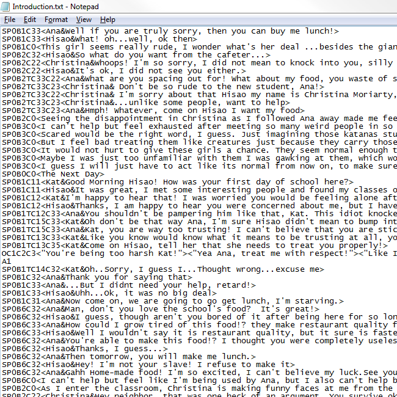Here is a snippet of our text docs and the format we used
What we ended up with was basically a mix between the two. I believe that just trying to dynamically locate from the info from the file itself lead to some difficulties just using FileReader, so we read the entire text file into a String array of sorts and navigated the Strings by checking tags and index. Our visual novel acts pretty similarly to assembly code, where we have limited branching functions that let us jump to certain parts of our array.
By the time I ended up working on it, the code was very clumped up. We basically crammed everything into two classes, and it was somewhat difficult for me to follow what the code was doing. Without the knowledge of how the inner workings functioned, I didn't want to mess around with reorganizing code. Unfortunately also, Alex had left in the middle of the night when I was asleep, and even when he tried to wake me up I chose to just sleep instead, so he wasn't able to explain clearly to me all the going on's of the program. I supposed it worked out okay. I eventually worked out the kinks on my own even though it did take some time to fix them all.
Alex basically got the parsing all complete to a good enough stage. It was now up to me to really brush it up, debug for errors with the text docs that the writers gave me, and add polish. Every game needs screen shake, so I added that in. Writers could indicate a tag for a screen shake to occur, signifying for example a character bumping into another character or something along those lines. I redid the entire UI that Derek quickly made because it was a bit sloppy and not centered. I used a new font, anti-aliased it, and positioned everything properly. I wrote a small algorithm to calculate how many words were needed to fit in the text box, and if any words went over, to use the next line.
The biggest graphical change I did was enabling double buffering, which took me a bit of fiddling to figure out. To be honest, I'm not 100% sure how I ended up making things work, but I think I grasp the concept a lot better now. And hey, the screen no longer flickers. The actual code for double buffering was surprisingly short and simple. If I understand the process right, we use the main graphics to paint the current image onto an offscreenBuffer, and we use the offscreenBuffer's graphics to paint to the main screen. I also went through some trouble to get backgrounds to fade in and out on new transitions so backgrounds don't just instantly jump to another one. For some reason, looking at the fades now, they seem pretty unwieldy and choppy at times. Perhaps I set the increments a little too high or low, I'm not sure.
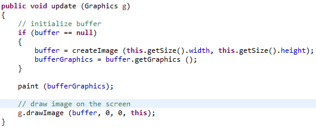Double buffering code
The rest of my time was devoted to debugging the writer text files, mostly hunting down small typos that broke choice selection. This involved going through and understanding the parsing code to a fine degree and some print statements to catch some odd errors. It's difficult to test if everything works properly since we only have the introduction text in, but routes seem to work for all the one or two choices in there.
Now bleeding over to the story side of things, there was some discussion between programming and story to decide what kind of format to use for the writing. Every line of dialogue comes with a decided background and character(s) currently present on the screen. This was decided pretty easily, but the main point of debate was how to decide to do choices, since visual novels tend to have different route systems. Some visual novels will make every single decision story impacting, meaning all decisions will lead to different circumstances. Generally this seems ill advised as this could lead to a lot of branching routes and be difficult to reel back in.
I think what we ended up using was a point system, that Katawa Shoujo seems to also employ. Essentially, making choices will add, subtract, or do nothing to your current number of points. Depending on your number of points, you could end up in different subpaths within the route or have different endings. That's the general gist of it... but I'm not exactly sure how closely we followed these rules now that I'm looking at our route texts. We didn't end up getting the actual routes in the game, so I'm not too familiar with what system we used.
For story, Victor and Derek worked on two different routes. Both stayed for almost the entire event and worked on other tasks before dividing time to story. Derek was on art and Victor on programming as mentioned before. At some point, however, we decided, alright, since this is a visual novel after all, we might as well dedicate some time to try and write a coherent story for Katana. And with people, uh, struggling to do other roles, we might as well dedicate manpower to writing. Each person decided to write a route for a girl. Originally, I think we wanted 3 routes, but they didn't expect the workload to be so demanding and cut the last route out to try and finish two instead.
I think one problem we definitely had with the story was that we tried to be a little too serious. As I laid out before, all these various girls were supposed to have katanas somehow sticking through their bodies. After brainstorming ideas for a while, however, Derek and Victor couldn't think of a single plausible and coherent reason and purpose for such a thing to occur and spin a reasonable story from it. Before the two actually got any writing done, we spent way too much time debating often smaller things.
Eventually, we decided that we would throw away the idea of girls being embedded with swords and do instead girls who carried katanas everywhere with them. Not a bad twist, and it offered a little more flexibility in story for them to write about. We spent a significant chunk of time designing our characters, which in retrospect was quite reasonable. But god damn, did we spent so much time on names. I swear we spent at least a day deciding names, and this cut heavily into our development time. At some point I cut in to resolve the issue because c'mon now, this is getting a bit too ridiculous. Let's just name them Kat and Ana, after Katana. Thus our character names were decided. And, oh yeah, there's also Christina. Not sure how Victor came around to that name, but one of our girls is named Christina Moriarty.
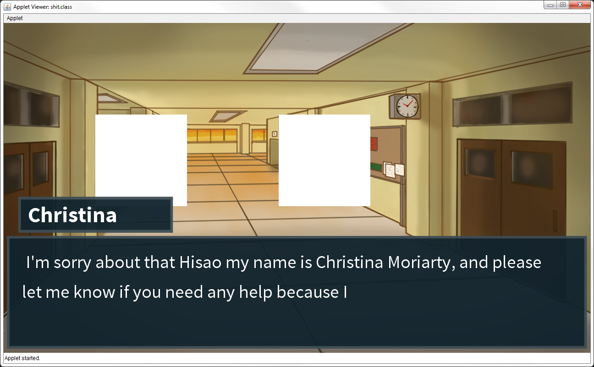Yep, that's her
With such a late start into writing, Victor and Derek ended up in a pretty horrible state towards the end of the game jam trying to catch up and finish their routes. Even after extensive planning, I think the branches ended up pretty hard to write and quickly got out of hand. I can't say for sure since I didn't look into too much with the writing side of the project, but they definitely seemed to struggle with it. The fact that neither did writing really in their free-time added to their difficulties. They pretty much just randomly decided to write for this one time event. At the very least, I'm glad they finished their routes.
We were unable to put their complete routes in the game, however. Naturally, if you finish the entire story at the very end of a game jam, you can't expect to put it in immediately off the bat, since there are numerous errors that could pop up. That's why the only section we have in is the introduction. Victor and Derek worked on separate text documents for their routes while I played around with getting the introduction text to work. By the end, we have the introduction working in the game, but not the two routes.
Derek ended up having to go to morning class on the day we were planning to finish, but he decided to come back and stay a while longer since he was determined to finish his route. Dehowe also joined us, and I took some time out to try and look at sound issues with him. Our 72 hour game jam turned out more to be 80 or so. While Derek finished his route, although somewhat fudgingly, Dehowe and I never got sound to work. Apparently we didn't know where to put the sound files, and tried between a gazillion different combinations to try and get it working, but to no avail. The Verves setup must have been different I suppose. We should have just Googled some other solution to using sound, that probably would have been easier at that point.
Oh well, that pretty much sums up all the different parts of our project. I've went over the art, sound, programming, and story sections of the game as clearly as I remember it. Overall, I would have to say I'm a bit disappointed since I expected better out of certain people during our time together, but whatever, I'm not too upset. I'll chock it up to inexperience. Each time we do these, we improve, and I'm hoping next time we'll all be able to step up and carry our weight.
Besides, I think the time we spent talking and joking around with each other far out weighed any negatives. It was really fun seeing old friends again and catching up. Playing songs 24/7 on plug.dj and eating hot pot together kept us going. Hopefully next time, we won't have as many issues. It was quite surprising to me to see so many people basically dipping in and out constantly. Next time we game jam, I'll have a car, so these issues should lessen.
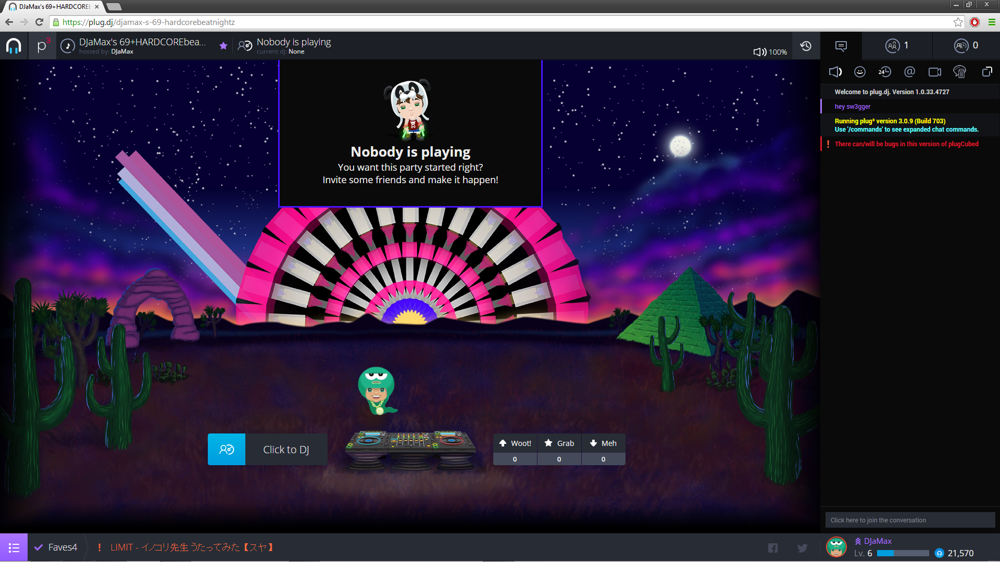Come swing by my room if you'd like
Next time I'm hoping to make something a little easier too. Maybe easier isn't the right word and instead layered. We didn't come up with any crazy ideas this time around, so I'm thinking of doing something more technical come winter break. My concept for now is to make a Tetris Friends clone, but in Python. I want to avoid web or mobile programming if possible because it involves having to force people to learn a completely new area of programming, and I mean, let's be honest, we know where that's going. Most of us have Python experience or are even learning Python at the moment. I don't imagine it too difficult to pick it up either.
Because it's Tetris, we can skimp away on the art and focus on the programming side of things. Different from before, we'll be able to implement all sorts of different components to our clone. I'm interested in network programming, so I want to work on a networking component where people can play against each other. If possible, I want someone working on a database component where people can create accounts and log in. If we have time, we can add in high scores, friends, and data collection parts to it. And of course, there's the actual game itself to program. I think this gives plenty of variety and content to work on, regardless of the skill and experience level of the programmers. I think it'll also be a pretty good first experience of realistic software engineering and development as well, with its many different parts and components.
I'll finish by saying a little bit about integrating the game onto the web. Holy hell was it difficult. There were so many random things that you seem to need to do to get by Java security hurdles. Thank god for Google and guides online to help me on certain parts. Indeed, I needed to look for information from several different sources and play around with options on my own in order to really put everything together. Since this is a process I've very recently done and because it's a process that's taken me a lot of time to figure out, I'll write a small tutorial here to explain what I did.
The basic steps are as follows: editing code to write in URLs instead of files, creating a manifest file to allow permissions, packing the files into a jar with this manifest file, signing the jar file, writing a JNLP file to set the applet up, and finally incorporating the JNLP into HTML to be presentable on the page.
Before we get into the entire process, I have to explain partially how our repository was organized. Our project contained two main sections: the bin folder, that held our .class files, images, and sounds; and the source folder, that contained our Java files. We have some miscellaneous files on the outside that were for scratch or for reference, as well as a .gitignore to remove any further unnecessary files.
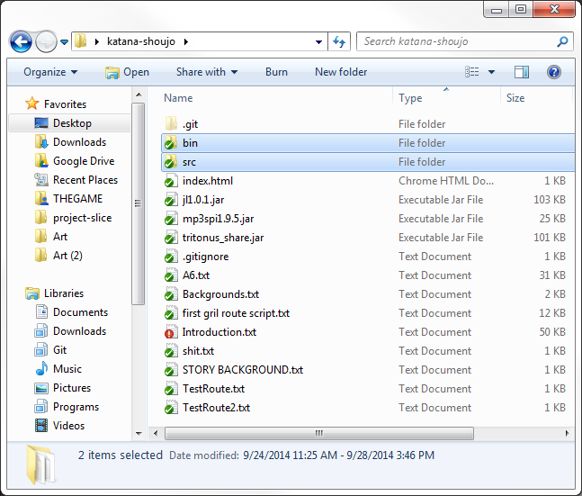Our repository
The reason we have this setup was that we wanted to reduce as much clutter as possible from our game. Our actual Eclipse and working project was elsewhere, but we would link the bin and the source folders from the repository to the project folder. This way, on top of the .gitignore, we would only be pushing and pulling files that we absolutely need. This helped save us some trouble from what happened last time on Kidnapper, where a wreck of files got strewn around confusingly. It is kind of odd though how we used the bin to store all of our files. Some .class files may have been pushed improperly as a result.
Now to start the process, the first task to do is to replace any new File calls with references to URL instead. This change may seem a bit odd at first, since using both URLs and Files seem to be fine when running the standalone game, but when trying to access files within a jar, I had to use this method in order to access any files.
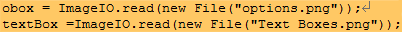Old code using new File
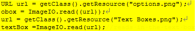New code using URLs
Next we're going to write a manifest file. This is a text file that will be placed within our jar that will specify a few options for us. The important line in this file is Permissions: all-permissions. This line is necessary to stop Java from complaining and automatically blocking the program from a user. I tried previously to just set Permissions: sandbox, but because I need to access image files outside from the actual program, Java started to whine. Make sure also that you leave a blank line at the end of your file. Forgetting this may result in your last specification not being read.
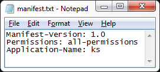My manifest.txt
Now we're ready to make our jar. Because all my files are essentially inside bin, I navigated within it and ran the jar command to pack everything there. Make sure to have a JDK installed, because the usual JRE does not have the jar command. The following command creates a new jar file called test.jar that will contain the manifest file we created earlier. The asterisk indicates that we want all the files currently sitting inside the directory we are in to be added into the jar.
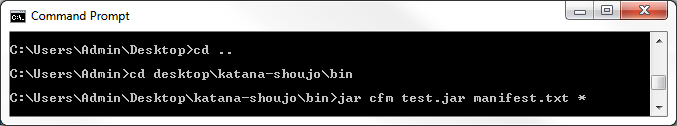Jar command
Java will also complain if we don't digitally sign our jar. We can sign the jar ourselves with a few commands. First we need to make our keystore with the keytool command and fill out the credentials as we would like. The keystore we created will generate the key necessary for our jar. I created the alias tester to represent this keystore.
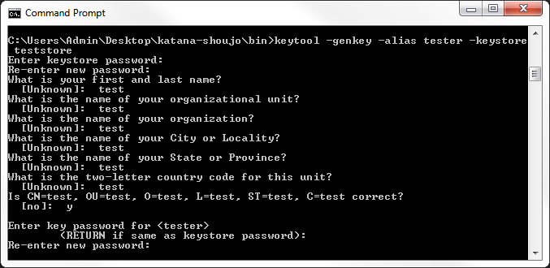Keytool command
With our new keystore, we can then sign our jar file with it using the keysigner command and the alias we just created.
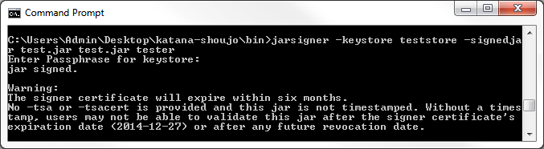Keysigner command
Now that we have our signed jar, we need to incorporate it within a JNLP file. Make sure to include a security tag within the file and set it to all-permissions. It took me a while to figure out that the JNLP file must have this section in order to fully allow the permissions.There are a few other things to note in this JNLP file. I have a lot of problems testing the applet locally, and the only way I've been able to find some success is by uploading it to my server and testing it there. That is why the codebase line is directed to my site. And yes, our main class is called shit.
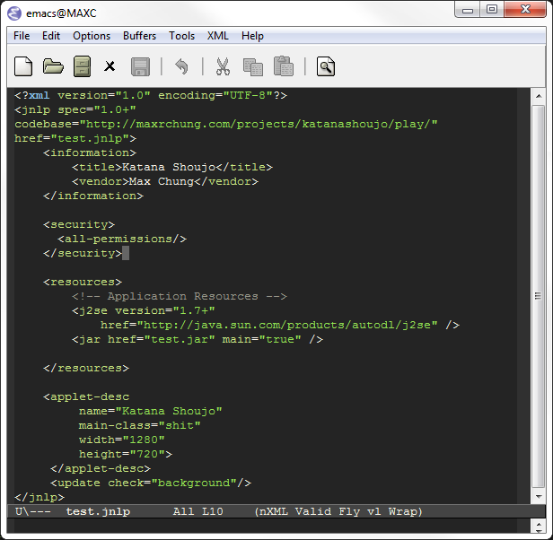My test.jnlp
Now access the JNLP from an HTML file to enable it on the webpage. We do so with this snippet of code using deployJava and running our JNLP file with runApplet. In this and the previous step, make sure to be careful of directories. The current setup has the HTML file, JNLP file, and jar all within the same folder.
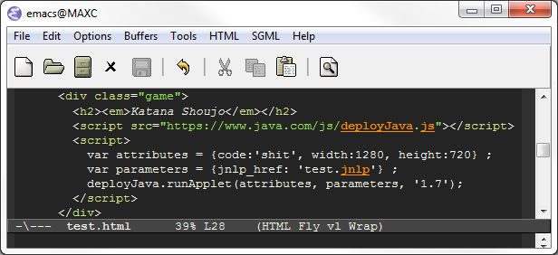My test.html
This should be enough to run it, but if not, we can try a few things and adjust options in Java Security from the Java Control Panel. Set the security level to high and add my site to the site exception list.
Java Control Panel, Security tab
Adding http://maxrchung.com to the exception list
This concludes my walkthrough. The game should now be up and running!
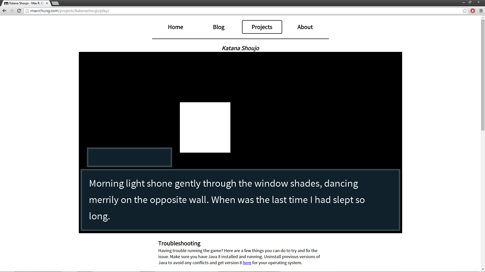Play the game here!